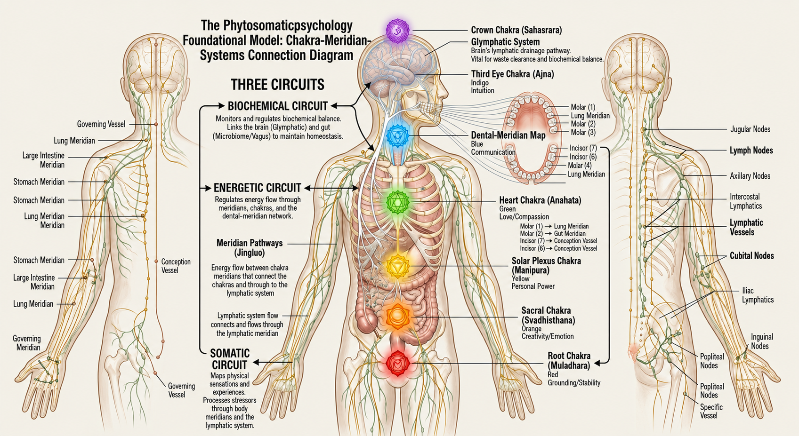
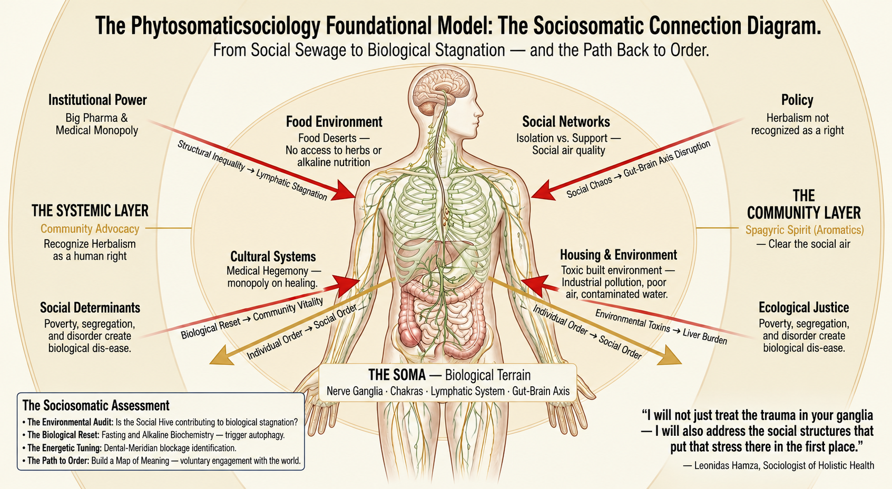

Conscious-Healing
Become a member — it's free — and unlock more herbalism knowledge than anywhere else offers at no cost.
Two Frameworks, One Practice
Healing happens in the body and in the systems that shape the body. We hold both at once.
Phytosomaticpsychology
The Individual Clinical ModelA close, personal practice attending to the body, the nervous system, and plant medicine — meeting each person where their physiology and lived experience actually are, not where a protocol assumes they should be.
Phytosomaticsociology
The Community Systems ModelWellness read through structural inequality and social environment — because the systems a person resides within shape the body just as much as anything happening inside it, and collective healing requires collective attention.
The Theoretical Foundation
Two original frameworks. One practice.

The Three Circuits, applied to the individual.“Phytosomaticpsychology reads a person through the same three circuits taught in The Apothecary — Biochemical, Energetic, and Somatic — treating them not as separate systems but as three languages describing one body. The nervous system, understood through this lens, is not just electrical signaling; it is the physical expression of energy itself. When that energy flows freely, the body and mind function with ease. When it is blocked, stagnated, or depleted, the result is not abstract — it manifests as physical symptom, emotional disturbance, or both.
This is where herbalism, nutrition, and the chakra-ganglia system meet. A person carrying chronic stress is not simply ‘stressed’ in an abstract sense — their nervous system is holding a physical pattern of tension, their gut-brain axis is under real, measurable strain, and their felt experience of anxiety or fog has a corresponding somatic reality. Phytosomaticpsychology exists to read that whole pattern — mind, body, and the energy that moves through both — rather than treating a symptom in isolation.
This framework does not diagnose or treat disease. It offers a way of understanding the self as an integrated system, in support of prevention: better sleep, clearer digestion, steadier mood, and a nervous system capable of returning to rest.”

The same pattern, at the scale of community.“If Phytosomaticpsychology reads the individual as an energetic system, Phytosomaticsociology reads the community the same way. A neighborhood, a city, a nation — these are systems too, with their own circulation, their own points of blockage, and their own capacity for stagnation. When housing fails, when jobs disappear, when trust between neighbors erodes, that is not merely a policy failure. It is a system experiencing the same stagnation-to-atrophy progression a body experiences when its own circulation is blocked.
This is the thinking behind Conscious Home Solutions and the Foundationalist: healing a person and healing the systems that person lives inside are not two separate projects. A person cannot fully recover in a home, a job, or a community that is itself in crisis. Structural inequality, unstable housing, and unaddressed community stress function as a kind of societal blockage — pressure with nowhere to go, eventually manifesting as the fear, anxiety, and instability so many people carry as if it were purely personal, when much of it originates in the systems surrounding them.
Phytosomaticsociology is the belief that healing has to happen at both scales at once — the individual and the collective — because they were never truly separate to begin with.”
The Conscious-Healing Covenant
As a family herbalist and student of fluid sociology, I pledge myself to the service of the living terrain. I will meet every individual where their physiology and lived experience actually are—not where a rigid protocol assumes they should be.
I promise to look beyond the surface of individual particles to understand the deeper, underlying waves of systemic imbalance. I will remember that a body cannot truly heal in an environment or home that is broken, and that individual wellness is inextricably bound to the collective terrain.
First, do no harm. I will not use weapons of suppression; instead, I will offer mineral terrains and plant allies that feed the vessel exactly what it needs to restore its own natural equilibrium. I will respect the inner wisdom of the individual, honoring their Solar Plexus as the ultimate authority over their own path of healing.
This I hold as my unyielding frequency, maintaining the sub-zero stillness required to serve the collective whole.